Favoritos
Agregue sus sitios web favoritos, se almacenan en su navegador.
Los iconos pueden tardar unos cuantos segundos en aparecer.
Favoritos agregados
Ajustes de WebKey Desktop
- General
- Temas
- Fondo
- Personalizaciones
- Atajos de Teclado
- Acerca de
Personalización
Información
Temas
Elija un tema que coincida con su estado de ánimo y estilo.
Temas claros
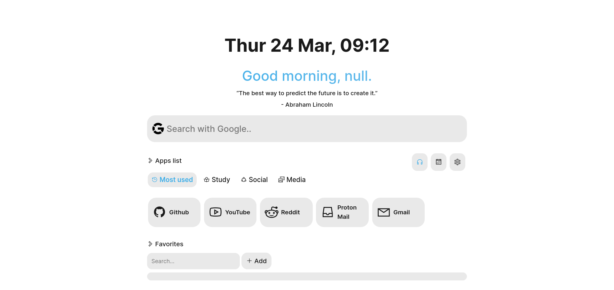
Estándar
Temas oscuros
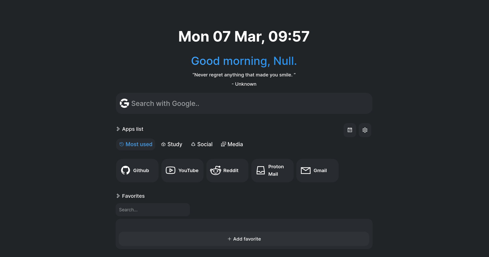
Gris
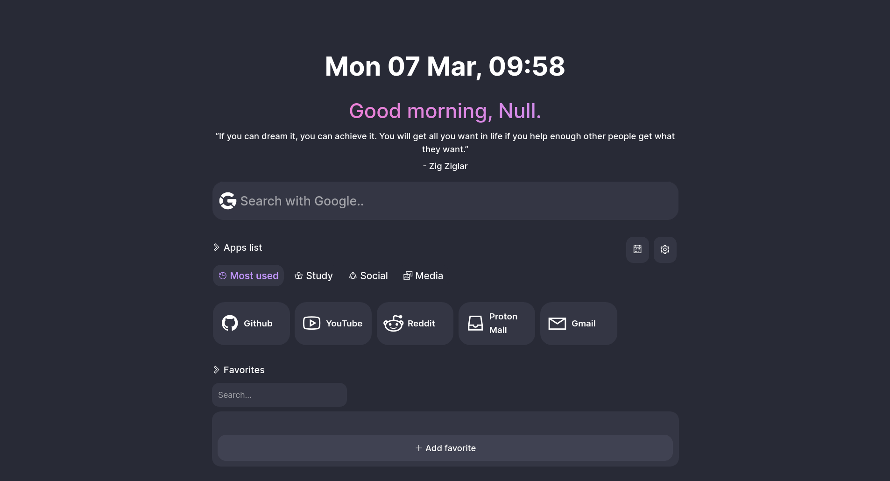
Violeta
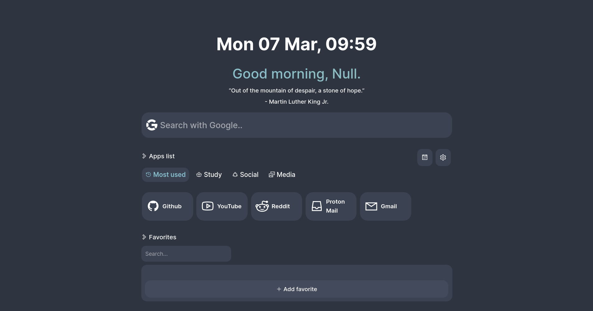
Gris claro
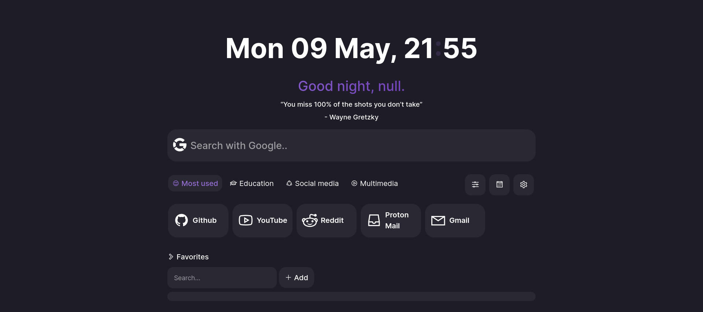
Morado
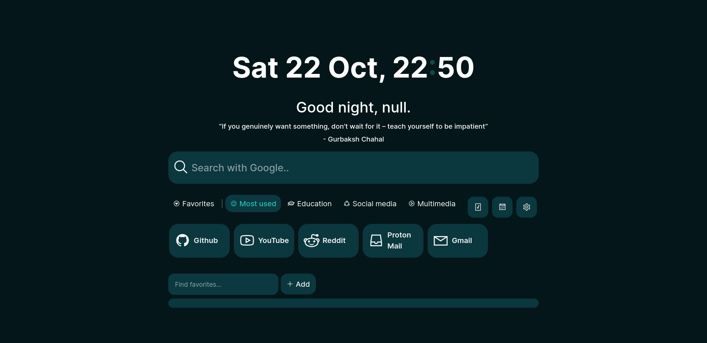
👻 Verde fantasmal
Temas oscuros
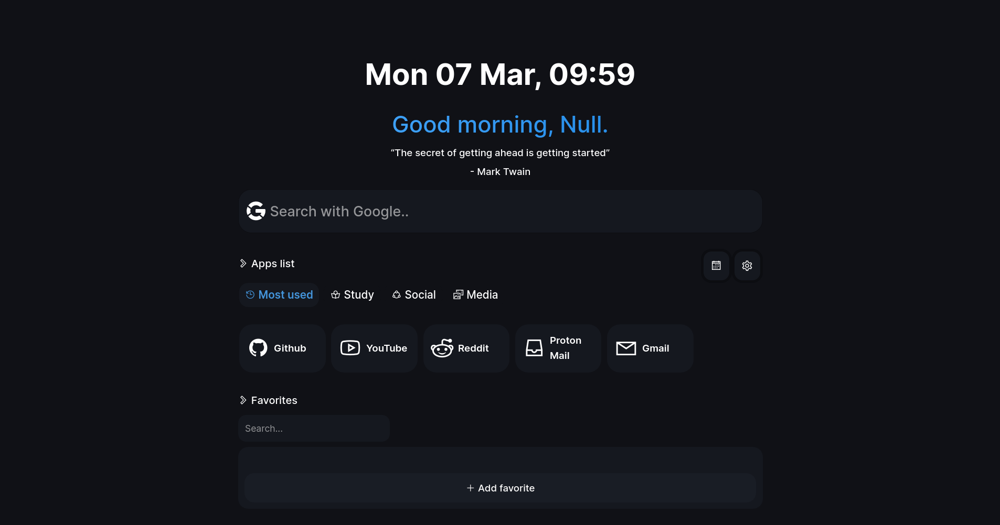
Verdadera oscuridad
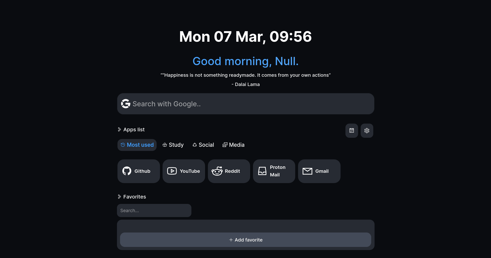
Alto contraste
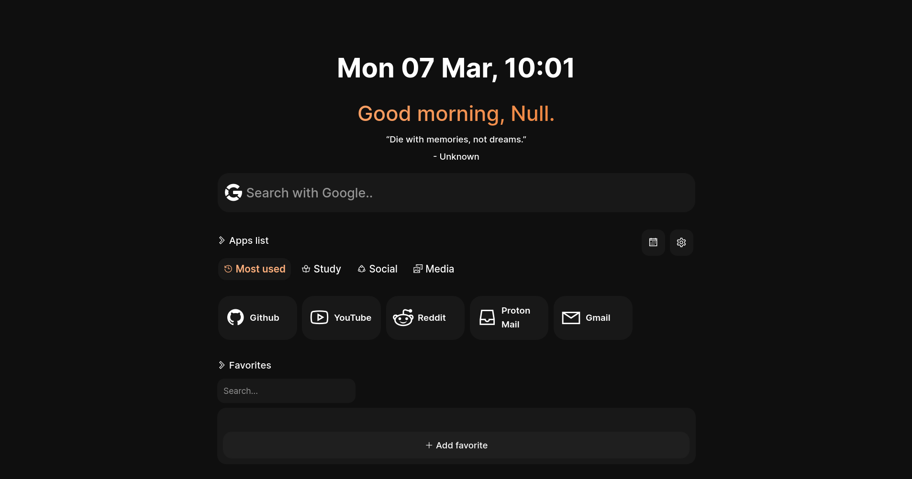
Espacio oscuro
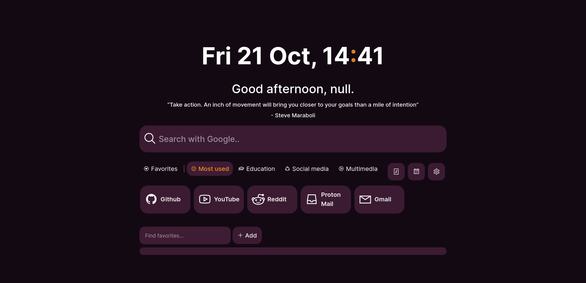
🎃 Halloween picante
Temas especiales
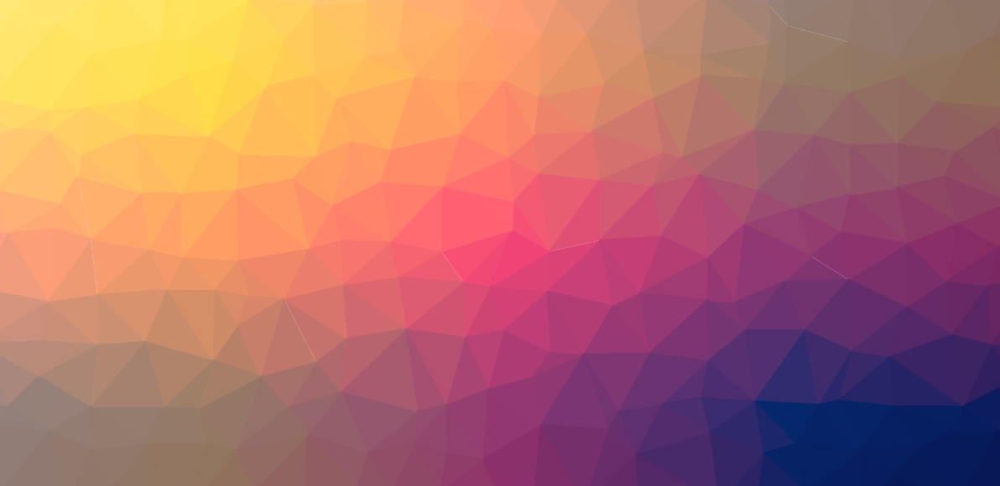
Cool
Temas experimentales
Pruebe los temas Beta. Úselo por su cuenta y riesgo.
Estándar (Beta)
Personalizaciones (Beta)
Opciones para modificar la interfaz de usuario de la página de inicio. Nota, algunos elementos No admiten personalizaciones.
Fuente
Esconder
Ocultar funcion de la pagina de inicio.
Ocultar barra de búsqueda
Fondo personalizado
Establece una imagen como GIF como fondo. Dependiendo de la imagen resolución, este proceso puede tardar unos segundos.
Subir imagen
Las imágenes cargadas se almacenan localmente en su dispositivo.
WebKey Desktop v 1.0.0 2023 - Política de privacidad